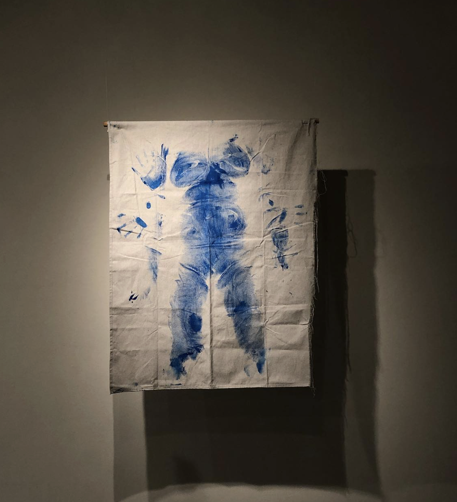
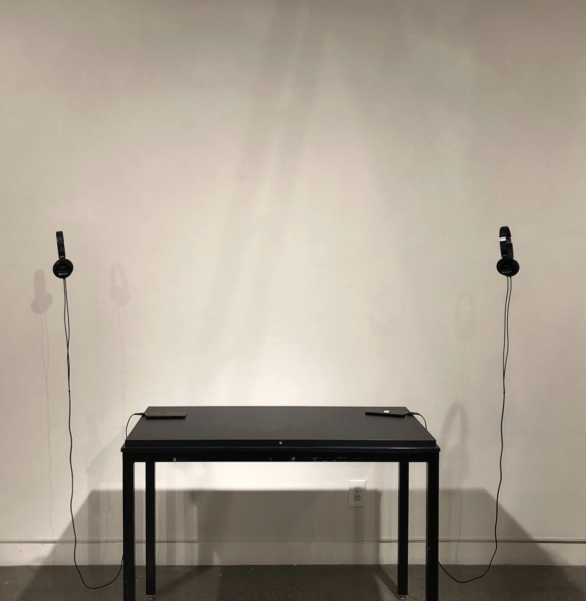

ah, Teng (2020) | Director
ah, Teng is a poetic documentary set in a house in suburban New Jersey where Teng Teng, a mother of two
daughters, has stage four breast cancer. On September 10th 2019, her daughters found out about the
cancer ––
and the fact that it has spread to almost every organ: liver, lung, bone, brain, etc. She died on May
27th,
2020. Shot from February 2020 to May 2020, ah, Teng follows Dina, the older sister as she lives in the
house
full-time and cares for her mother, and Shana, the younger sister, who travels back-and-forth between
home
and college to be with her mother. ah, Teng is directed and created by Shana Kleiner, Teng Teng’s
youngest
daughter, and reveals an intimate first-person perspective of what it looks like and feels like to see
her
mother die, what it means to navigate loss, and how grieving has implicated the spaces that she calls
home.
Life of Abundance (2024) | Producer
Directed by filmmaker Shawn Kornhauser and produced by Shana Kleiner, Life of Abundance is a short film
depicting the Black experience surrounding grief, loss, and community healing in Harlem, New York. The
documentary follows a diverse group of Black Harlem residents, all older adults, who participated in a
series of focus groups, on grief, hosted by Columbia University. The film follows community members
where they are most comfortable: their homes, the Church, and their neighborhoods, to discuss the
intersections of coping with grief, and the reality and banality of grief as an undercurrent to everyday
life. In light of COVID-19 and so many institutional losses since, Life of Abundance offers a complex
and poetic snapshot where research and lived experience collide, and how Black people make meaning of
their own lives after experiencing the death of a loved one.


my scar from falling off a bike in August (2019)
my scar from falling off a bike in August was a mixed-media installation at the Schick Art Gallery,
consisting of audio excerpts and paint-on-canvas, also surrounding themes of motherhood, loss, and
embodiment. This installation served as a time capsule during sickness and death, and also involving
collage
and journal excerpts, which aim to capture the mundane banality during ubiquitous grief. Recipient of
MDOCS
Golden Acorn Award for Installation.